はじめに
巡回セールスマン問題 (TSP) の続きです。前回は TSP を「欲張り法」で解いてみました。今回は「分割統治法」を使って TSP の近似解を求めてみましょう。
●分割統治法とは？
分割統治法は大きな問題を小さな問題に分割してそれを解き、その答えを統合することで大きな問題の答を得る方法です。たとえば、拙作のページ 再帰定義 で取り上げた「ハノイの塔」の解法も、n 枚の円盤を n - 1 枚の円盤を動かしてから n 枚目の円盤を動かす、というように 2 つの問題に分けて考えることができます。クイックソートやマージソート、二分探索木なども分割統治法といっていいでしょう。また、アルゴリズムだけなくプログラミングの場合にも当てはまります。大きな処理を一度に作るのは難しいですが、その場合は小さな処理に分割して作っていけばいいわけです。
●分割の方法
ところで、実際に分割統治法でプログラムを作る場合、小問題の解から元の問題の解が簡単に作れるように分割することが重要になります。つまり、分割方法がいちばんのポイントになるわけです。TSP の場合、幸いなことに 参考文献 3 にうまい方法が紹介されています。
まず、横に長い領域は縦に、縦に長い領域は横に分割していきます。そして、分割を進めて都市の個数が 3 つ以下になれば、最短長の閉路を簡単に構成することができます。今度は、出来上がった閉路を順番に統合していき、最後にひとつの巡路を作り上げます。
│ │
Ａ │ ●Ｂ Ａ │ ●Ｂ
● │ │＼ ● │ ／ ＼
／ ＼ │ │ ＼ ／ ＼ │ ／ ＼
／ ＼ │ │ ＼ ／ ＼│／ ＼
●Ｃ ●Ｄ│ │ ●Ｅ ●Ｃ ●Ｄ ●Ｅ
＼ ／ │ │ ／ ＼ ／│＼ ／
＼ ／ │ │ ／ ＼ ／ │ ＼ ／
● │ │／ ● │ ＼ ／
Ｆ │ ●Ｇ Ｆ │ ●Ｇ
│ │
分割（１） 分割（２）
閉路１ : [A, D, F, C]
閉路２ : [B, D, G, E]
図 : 分割の方法
また、領域を二分割するときは、上図 (1) のような独立な閉路に 2 分割するのではなく、2 つの閉路を統合する処理が簡単になるように、(2) のように共有点を持たせます。具体的には次のように行います。
[C, A, F, D]
↑
COPY
│
------------
[A, B, C, D, E, F, G] == SORT ==> [C, A, F, D, B, G, E]
------------
│
COPY
↓
[D, B, G, E]
図 : 領域の分割
経路を表す配列を x 座標 (または y 座標) を基準にソートします。すると、配列の中央に位置する点 D が共有点になります。そして、配列の先頭から共有点までをコピーし、共有点から最後までをコピーすれば、共有点 D を持った 2 つの経路に分割することができます。
●プログラムの作成
それでは、実際に分割を行うプログラムを作ってみましょう。次のリストを見てください。
リスト : 分割のテスト
# 分割する方向を決定する
def divide_direction(buff):
x1 = min(map(lambda x: x[0], buff))
y1 = min(map(lambda x: x[1], buff))
x2 = max(map(lambda x: x[0], buff))
y2 = max(map(lambda x: x[1], buff))
return x2 - x1 > y2 - y1
# 分割する
def divide(buff, comp):
buff.sort(comp)
n = len(buff) / 2
buff1 = buff[:(n+1)]
buff2 = buff[n:]
return buff[n], buff1, buff2
# 分割のテスト
def divide_test(buff):
if len(buff) <= 3:
draw_path(buff)
else:
if divide_direction(buff):
p, b1, b2 = divide(buff, lambda x, y: x[0] - y[0])
else:
p, b1, b2 = divide(buff, lambda x, y: x[1] - y[1])
divide_test(b1)
divide_test(b2)
関数 divide_test の引数 buff は都市を格納した配列です。要素はタプル (x, y) で、都市の座標を表します。buff の大きさが 3 以下の場合、ひとつの閉路ができたので、関数 draw_path で閉路を描画します。そうでなければ、関数 divide_direction で分割方向を決定します。True の場合、x 方向が長いので縦に分割します。Flase の場合は横に分割します。あとは、分割した配列 b1, b2 に対して divide_test を再帰呼び出しします。
関数 divide は引数 buff を 2 分割して、分割した配列と共有点を返します。引数 comp が sort に渡す比較関数です。x 方向が長くて縦に分割する場合、x 座標を基準にソートします。そうでなければ y 座標を基準にソートします。関数 divide_direction は x, y 座標の最大値と最小値を求め、x 方向の幅が長ければ True を、そうでなければ False を返します。
●分割のテスト
それでは前回作成したデータでテストしてみましょう。実行結果は次のようになりました。
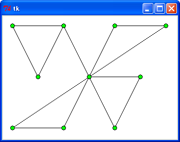 data2.txt
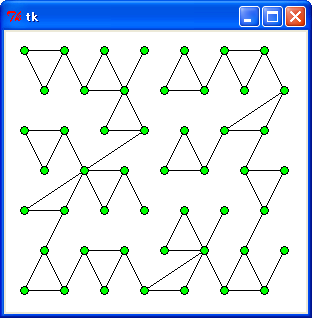 data49.txt
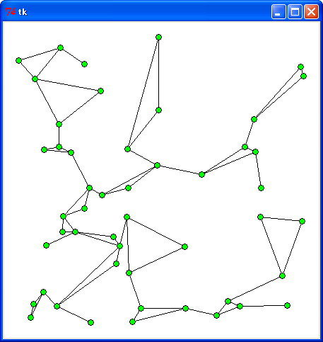 r49.txt
正常に動作していますね。
●統合の方法
次は統合の方法を説明します。下図を見てください。
Ａ─────→●Ｂ Ａ ●Ｂ
● ＼ ● ／ ＼
／ ＼ ／ ＼ ／ ＼
／ ＼ ／ ＼ ／ ＼
●Ｃ ●Ｄ ●Ｅ ●Ｃ ●Ｄ ●Ｅ
＼ ／ ＼ ／ ＼ ／
＼ ／ ＼ ／ ＼ ／
● ＼ ／ ● ／
Ｆ ●Ｇ Ｆ─────→●Ｇ
[A, D, F, C] + [B, D, G, E] [A, D, F, C] + [B, D, G, E]
=> [A, B, E, G, D, F, C] => [A, D, B, E, G, F, C]
（１） （２）
Ａ─────→●Ｇ Ａ ●Ｇ
● ＼ ● ／ ＼
／ ＼ ／ ＼ ／ ＼
／ ＼ ／ ＼ ／ ＼
●Ｃ ●Ｄ ●Ｅ ●Ｃ ●Ｄ ●Ｅ
＼ ／ ＼ ／ ＼ ／
＼ ／ ＼ ／ ＼ ／
● ＼ ／ ● ／
Ｆ ●Ｂ Ｆ─────→●Ｂ
[A, D, F, C] + [B, D, G, E] [A, D, F, C] + [B, D, G, E]
=> [A, G, E, B, D, F, C] => [A, D, G, E, B, F, C]
（３） （４）
図 : 統合の方法
統合する場合は共有点Ｄを中心に、次の 4 通りの中で距離がいちばん短くなる経路を選択します。
(1) Ａ－Ｄ－Ｂ → Ａ－Ｂ (2) Ｆ－Ｄ－Ｇ → Ｆ－Ｇ (3) Ａ－Ｄ－Ｇ → Ａ－Ｇ (4) Ｆ－Ｄ－Ｂ → Ｆ－Ｂ
(1) の場合、D の前に [B, E, G] を挿入します。(2) の場合は D の後ろに [B, E, G] を挿入します。(3) の場合、D の前に [G, B, E] を挿入し、(4) の場合は D の後ろに [G, B, E] を挿入します。これで 2 つの閉路を 1 つに統合することができます。
●プログラムの作成 (2)
それでは閉路を統合するプログラムを作りましょう。次のリストを見てください。
リスト : 分割統治法による解法
def divide_merge(buff):
if len(buff) <= 3:
return buff
else:
if divide_direction(buff):
p, b1, b2 = divide(buff, lambda x, y: x[0] - y[0])
else:
p, b1, b2 = divide(buff, lambda x, y: x[1] - y[1])
b3 = divide_merge(b1)
b4 = divide_merge(b2)
return merge(b3, b4, p)
関数 divide_merge は引数 buff を分割していき、生成された閉路を統合します。分割処理は divide_test とほとんど同じです。buff の大きさが 3 以下ならば buff をそのまま返します。そうでなければ、関数 divide で buff を分割して、divide_merge を再帰呼び出します。あとは、その結果を関数 merge で統合します。
次は閉路を統合する関数 merge を作ります。
リスト : 閉路の統合
def merge(buff1, buff2, p):
# 共有ポイントを探す
p1, i1, n1 = search(p, buff1)
p2, i2, n2 = search(p, buff2)
# 差分を計算
d1 = differ(buff1[p1], p, buff2[p2])
d2 = differ(buff1[n1], p, buff2[n2])
d3 = differ(buff1[p1], p, buff2[n2])
d4 = differ(buff1[n1], p, buff2[p2])
# 差分が一番大きいものを選択
d = max(d1, d2, d3, d4)
if d1 == d:
# (1)
buff1[i1:i1] = make_new_path(buff2, i2, -1)
elif d2 == d:
# (2)
buff1[n1:n1] = make_new_path(buff2, i2, -1)
elif d3 == d:
# (3)
buff1[i1:i1] = make_new_path(buff2, i2, 1)
else:
# (4)
buff1[n1:n1] = make_new_path(buff2, i2, 1)
return buff1
引数 buff1, buff2 は閉路を表す配列、引数 p は共有点を表すタプルです。最初に、関数 search を呼び出して、閉路にある共有点の位置を探します。このとき、共有点だけではなく前後の位置も返します。共有点の位置を i とすると、search の返り値は i - 1, i, i + 1 になります。ただし、配列をリングバッファ (循環配列) と考えて、i - 1 が負になる場合は最後尾の要素の位置、i + 1 がバッファの大きさと等しい場合は 0 とします。
次に、経路をつなぎかえた場合の差分を関数 differ で求めます。たとえば、「A - D - B」を「A - B」に変更した場合、「A - D - B」の長さから「A - B」の長さを引いた値が大きいほど、距離をより短くできたことになります。4 通りの場合を計算して、それぞれ変数 d1, d2, d3, d4 にセットします。そして、その中の最大値を選択し、関数 make_new_path で生成した経路を buff1 に挿入します。
関数 make_new_path は次のようになります。
リスト : 挿入するための新しい経路を作る
def make_new_path(buff, c, succ):
path = []
i = c + succ
while True:
if i < 0: i = len(buff) - 1
elif i >= len(buff): i = 0
if i == c: break
path.append(buff[i])
i += succ
return path
引数 buff が閉路を表す配列、c が共有点の位置、succ が閉路をたどる方向 (1 or -1) を表します。変数 i を c + succ に初期化し、i が c と等しくなるまで、buff[i] を path に追加します。これで共有点を除いた新しい経路を作ることができます。
あとのプログラムは簡単なので説明は割愛します。詳細は プログラムリスト をお読みください。
●実行結果
それでは実行してみましょう。まずは厳密解から比較します。
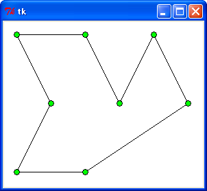
C>python tsp3.py < data0.txt 939.294558148 0.000246120666174
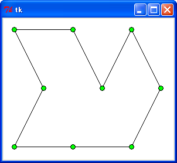
C>python tsp3.py < data1.txt 970.82039325 0.000254780984734
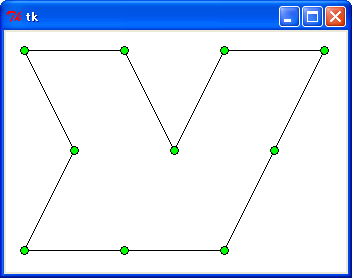
C>python tsp3.py < data2.txt 1070.82039325 0.000312609563506

C>python tsp3.py < data3.txt 1239.29455815 0.000372952428311
: TSP0 : TSP1 : TSP2 : TSP3
----------+--------+--------+--------+--------
data0.txt : 847.2 : 1073.1 : 923.6 : 939.3
data1.txt : 947.2 : 1104.7 : 1106.4 : 970.8
data2.txt : 1047.2 : 1206.4 : 1206.4 : 1070.8
data3.txt : 1147.2 : 1467.9 : 1306.4 : 1239.3
----------+--------+--------+--------+--------
合計 : 3988.8 : 4852.1 : 4542.8 : 4220.2
誤差 : 0 % : 21.6 % : 13.9 % : 5.8 %
data0.txt 以外のデータでは、欲張り法に比べて短い巡路になっています。距離の合計でみると、TSP3 が一番短くなりました。それでは、都市の個数を増やしてましょう。
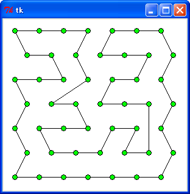
C>python tsp3.py < data49.txt 2131.25957606 0.00226229869997
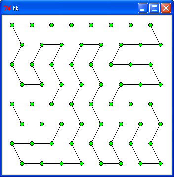
C>python tsp3.py < data64.txt 2720.5262247 0.00259697810755
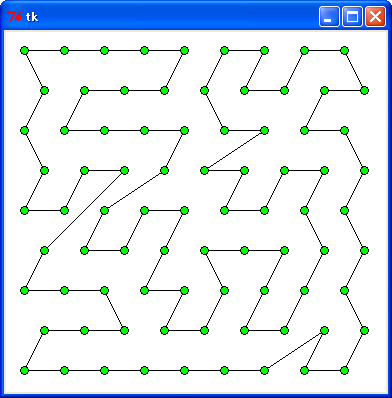
C>python tsp3.py < data81.txt 3593.60318397 0.00374880047604
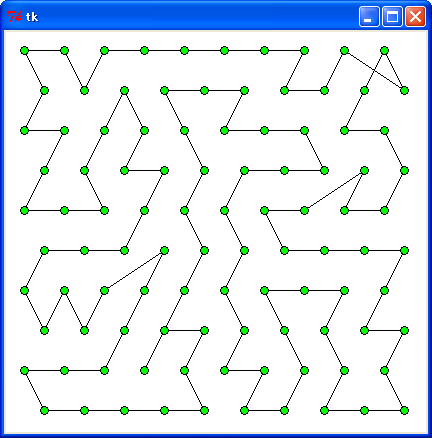
C>python tsp3.py < data100.txt 4414.89328998 0.00509059112261
: TSP1 | TSP2 : TSP3
------------+---------+---------+---------
data49.txt : 2321.1 : 2313.7 : 2131.3
data64.txt : 2913.8 : 3168.3 : 2720.5
data91.txt : 3770.3 : 3803.6 : 3593.6
data100.txt : 4925.9 : 4516.9 : 4414.9
------------+---------+---------+---------
合計 | 13931.1 : 13802.5 : 12860.3
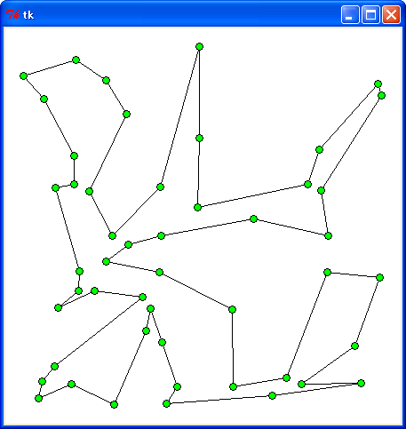
C>python tsp3.py < r49.txt 3276.16160926 0.00228045743244
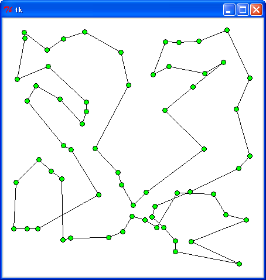
C>python27\python tsp3.py < r64.txt 3421.9837829 0.00293054005467
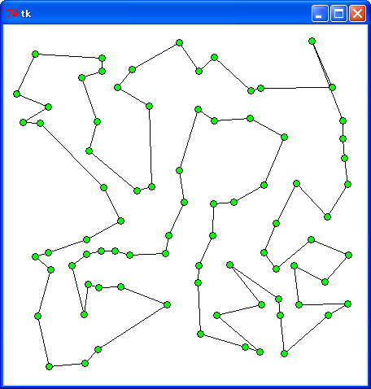
C>python tsp3.py < r81.txt 3717.49327235 0.00378623540143
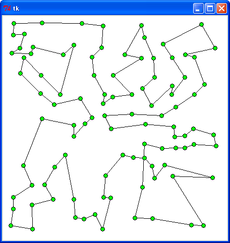
C>python tsp3.py < r100.txt 4277.37295297 0.00504365778332
: TSP1 | TSP2 : TSP3
---------+---------+---------+---------
r49.txt : 2731.4 : 2866.4 : 3276.2
r64.txt : 3619.7 : 3252.4 : 3422.0
r91.txt : 4072.6 : 3655.3 : 3717.5
r100.txt : 4389.5 : 4279.2 : 4277.4
---------+---------+---------+---------
合計 : 14813.2 : 14053.3 : 14693.1
規則的なデータの場合は分割統治法の方が優れていますが、ランダムデータの場合は欲張り法より劣る場合もありました。距離の合計をみると、ランダムデータではクラスカルのアルゴリズムの変形版 (TSP2) が一番短くなりました。処理時間は単純な欲張り法 (TSP1) よりも遅くなりますが、TSP2 よりも高速です。興味のある方はいろいろなデータで試してみてください。
今回はここまでです。次回は「局所探索法」による巡路の改善に挑戦してみましょう。
●参考文献
- A.V. Aho, J.E. Hopcroft, J.D. Ullman, 『データ構造とアルゴリズム』, 培風館, 1987
- 奥村晴彦, 『Ｃ言語による最新アルゴリズム事典』, 技術評論社, 1991
- 松田晋, 『実践アルゴリズム戦略 解法のテクニック <第 7 回> 巡回セールスマン問題の分割統治解法』, C MAGAZINE 1992 年 11 月号, ソフトバンク
- 松田晋, 『実践アルゴリズム戦略 解法のテクニック <第 14 回> 強欲戦略(2)』, C MAGAZINE 1993 年 6 月号, ソフトバンク
●プログラムリスト
# coding: utf-8
#
# tsp3.py : 巡回セールスマン問題 (分割統治法)
#
# Copyright (C) 2012 Makoto Hiroi
#
import sys
import math
import time
from Tkinter import *
# 標準入力よりデータを読み込む
def read_data():
buff = []
for a in sys.stdin:
b = a.split()
buff.append((int(b[0]), int(b[1])))
return buff
# 距離の計算
def distance(p1, p2):
dx = p1[0] - p2[0]
dy = p1[1] - p2[1]
return math.sqrt(dx * dx + dy * dy)
# 経路の距離を求める
def path_length(path):
global distance_table
n = 0
i = 1
for i in xrange(1, len(path)):
n += distance(path[i - 1], path[i])
n += distance(path[0], path[-1])
return n
# 分割する方向を決定する
def divide_direction(buff):
x1 = min(map(lambda x: x[0], buff))
y1 = min(map(lambda x: x[1], buff))
x2 = max(map(lambda x: x[0], buff))
y2 = max(map(lambda x: x[1], buff))
return x2 - x1 > y2 - y1
# 分割する
def divide(buff, comp):
buff.sort(comp)
n = len(buff) / 2
buff1 = buff[:(n+1)]
buff2 = buff[n:]
return buff[n], buff1, buff2
# 差分を計算する
def differ(p, c, q):
return distance(p, c) + distance(c, q) - distance(p, q)
# 共有点を探す
def search(x, buff):
for i in xrange(len(buff)):
if buff[i] == x:
if i == 0: return len(buff) - 1, i, i + 1
if i == len(buff) - 1: return i - 1, i, 0
return i - 1, i, i + 1
# 挿入するための新しい経路を作る
def make_new_path(buff, c, succ):
path = []
i = c + succ
while True:
if i < 0: i = len(buff) - 1
elif i >= len(buff): i = 0
if i == c: break
path.append(buff[i])
i += succ
return path
# 併合する
# buff1 = [a, b, c, d, e]
# buff2 = [f, g, c, h, i]
# (1) b - g => [a, b, g, f, i, h, c, d, e]
# (2) d - h => [a, b, c, g, f, i, h, d, e]
# (3) b - h => [a, b, h, i, f. g. c, d, e]
# (4) d - g => [a, b. c. h, i, f, g, d, e]
def merge(buff1, buff2, p):
# 共有ポイントを探す
p1, i1, n1 = search(p, buff1)
p2, i2, n2 = search(p, buff2)
# 差分を計算
d1 = differ(buff1[p1], p, buff2[p2])
d2 = differ(buff1[n1], p, buff2[n2])
d3 = differ(buff1[p1], p, buff2[n2])
d4 = differ(buff1[n1], p, buff2[p2])
# 差分が一番大きいものを選択
d = max(d1, d2, d3, d4)
if d1 == d:
# (1)
buff1[i1:i1] = make_new_path(buff2, i2, -1)
elif d2 == d:
# (2)
buff1[n1:n1] = make_new_path(buff2, i2, -1)
elif d3 == d:
# (3)
buff1[i1:i1] = make_new_path(buff2, i2, 1)
else:
# (4)
buff1[n1:n1] = make_new_path(buff2, i2, 1)
return buff1
# 分割統治法による解法
def divide_merge(buff):
if len(buff) <= 3:
# print buff
return buff
else:
if divide_direction(buff):
p, b1, b2 = divide(buff, lambda x, y: x[0] - y[0])
else:
p, b1, b2 = divide(buff, lambda x, y: x[1] - y[1])
b3 = divide_merge(b1)
b4 = divide_merge(b2)
return merge(b3, b4, p)
# テスト
def divide_test(buff):
if len(buff) <= 3:
print buff
draw_path(buff)
else:
if divide_direction(buff):
p, b1, b2 = divide(buff, lambda x, y: x[0] - y[0])
else:
p, b1, b2 = divide(buff, lambda x, y: x[1] - y[1])
divide_test(b1)
divide_test(b2)
# データ入力
point_table = read_data()
s = time.clock()
path = divide_merge(point_table)
e = time.clock()
print path_length(path)
print e - s
# 経路の表示
def draw_path(path):
x0, y0 = path[0]
for i in xrange(1, len(path)):
x1, y1 = path[i]
c0.create_line(x0, y0, x1, y1)
x0, y0 = x1, y1
c0.create_line(x0, y0, path[0][0], path[0][1])
for x, y in path:
c0.create_oval(x - 4, y - 4, x + 4, y + 4, fill = "green")
max_x = max(map(lambda x: x[0], point_table)) + 20
max_y = max(map(lambda x: x[1], point_table)) + 20
root = Tk()
c0 = Canvas(root, width = max_x, height = max_y, bg = "white")
c0.pack()
draw_path(path)
root.mainloop()
●Appendix: 選択
n 個のデータのうち小さい方から数えて k 番目の値を求めることを「選択 (selection) 」という場合があります。手を抜くのであれば、クイックソートなどでソートしてしまえば簡単に求めることができます。しかし、データ数 n が多くなるとクイックソートでも n * log2 n に比例する時間が必要になります。ところが、クイックソートを変形することで、データ数 n に比例する程度の時間で k 番目のデータを求めることができるのです。
クイックソートはある値（枢軸）を基準にして、要素をそれより大きいものと小さいものの 2 つに分割していくことでソートを行います。2 つに分けた各々のグループを同様に分割して、さらに 2 つのグループに分けます。分割を続けていくと最後は要素がひとつになりソートが完了します。
選択も枢軸を基準に二分割していきますが、枢軸の決め方と二分割したグループの扱い方が異なるのです。
３番目のデータを求める
↓
table[９５３７６４２８] ３番目に格納されている７を
↑ ↑ 枢軸にして二分割する
Ｌ Ｒ
table[２５３４６７９８] Ｒ＞３なので前半部分０－４に対して
↑↑ 同様の操作を行う
ＲＬ
↓
table[２５３４６７９８] 今度は４を枢軸として二分割する
↑ ↑
Ｌ Ｒ
table[２３５４６７９８] Ｌ＜３なので後半部分２－４に対して
↑↑ 同様の操作を行う
ＲＬ
図 : 選択のアルゴリズム
上図を見てください。配列 table の中から 3 番目のデータを求めます。この場合、枢軸は table[3] に格納されている 7 となります。この値を基準に、クイックソートと同様に配列を二分割すると、0 から R の前半部分に枢軸より小さい値が集まり、L から最後までの後半部分には枢軸より大きい値が集まります。
もし、R が 3 より大きいのであれば、求めるデータは前半部分に含まれることになります。逆に L が 3 より小さいのであれば、後半部分に含まれます。上図の場合は、R は 4 なので前半部分に求めるデータがあるのです。この部分に対して、同様の処理を繰り返します。
今度も table[3] に格納されている要素を枢軸にします。この枢軸に対して配列を二分割します。この処理を繰り返していくと、最後にはグループに含まれる要素がひとつになって分割不能になります。このとき、table[3] に格納されたデータが答となるのです。
選択は、分割したグループの片方に対してのみ操作を行うので、クイックソートよりも高速に処理することが可能になるのです。またプログラムの作成も、再帰を使わずに繰り返しで簡単に実現できます。
リスト : 選択
def select(table, k):
start = 0
end = len(table) - 1
while start < end:
pivot = table[k]
i = start
j = end
while True:
while pivot > table[i]: i += 1
while pivot < table[j]: j -= 1
if i > j: break
table[i], table[j] = table[j], table[i]
i += 1
j -= 1
if j < k: start = i
if k < i: end = j
return table[k]
引数 k が求める順番を表し、変数 start と end が分割する区間の両端を表します。最初の while ループで、区間内の要素がなくなるまで分割を繰り返します。2 番目の while ループの中で区間を二分割します。これはクイックソートの場合と同じです。
最初に、配列 table の k 番目に位置するデータを枢軸 pivot に選びます。次の while ループで、左側から枢軸以上の要素を探します。枢軸以上という条件を、枢軸より小さい間は検索位置を進めると表していることに注意してください。同様に、その次の while ループで右側から枢軸以下の要素を探します。お互いの検索位置 i, j が交差したら分割を終了し、break で while ループを脱出します。そうでなければ、お互いの要素を交換します。交換したあとは i と j を更新しておくことをお忘れなく。
分割が終わって j が k より小さい場合は後半部分を再度分割します。start を i に書き換えて、while ループの先頭に戻ります。i が k より大きい場合は前半部分を分割します。この場合は、end を j に書き換えます。while ループが終了したら、table の k 番目の値を返します。
それでは、どの程度効果があるのか拙作のページ 整列 [1] で作成したクイックソート quick_sort と比較してみましょう。データ数を 20000, 40000, 60000, 80000 増やしていき、その中央値を求めることにします。
リスト : クイックソートとの比較
# クイックソート
def quick_sort(buff, low, high):
pivot = buff[(low + high) / 2]
i = low
j = high
while True:
while pivot > buff[i]: i += 1
while pivot < buff[j]: j -= 1
if i >= j: break
temp = buff[i]
buff[i] = buff[j]
buff[j] = temp
i += 1
j -= 1
if low < i - 1: quick_sort(buff, low, i - 1)
if high > j + 1: quick_sort(buff, j + 1, high)
# テスト
if __name__ == '__main__':
for x in [20000, 40000, 60000, 80000]:
buff = range(x)
random.shuffle(buff)
buff1 = buff[:]
print '----- select -----'
print x
s = time.clock()
y = select(buff, x / 2)
print y, time.clock() - s
#
print '----- qsort -----'
print x
s = time.clock()
quick_sort(buff1, 0, x - 1)
print buff1[x / 2], time.clock() - s
実行結果は次のようになりました。
----- select ----- 20000 10000 0.0144543510418 ----- qsort ----- 20000 10000 0.139611598681 ----- select ----- 40000 20000 0.0411784179274 ----- qsort ----- 40000 20000 0.300338730202 ----- select ----- 60000 30000 0.0637933033388 ----- qsort ----- 60000 30000 0.453276603591 ----- select ----- 80000 40000 0.0918703354756 ----- qsort ----- 80000 40000 0.62742778761
表 : 実行結果
| 20000 | 40000 | 60000 | 80000
-------+-------+-------+-------+-------
select| 0.014 | 0.041 | 0.064 | 0.092
qsort| 0.140 | 0.300 | 0.453 | 0.627
実行環境 : Windows XP, celeron 1.40 GHz, Python 2.7
圧倒的に select が速いことがわかります。
ところで、この select を TSP の分割統治解法に応用することができます。既にお気づきの方もいらっしゃるかと思いますが、select を実行すると配列の内容は k 番目より小さいデータが前半に集められ、大きいデータが後半に集められます。つまり k を基準に二分割することができるのです。Python の場合、組み込み関数 sort を使って十分な性能が得られましたが、興味のある方はプログラムを改造してみてください。